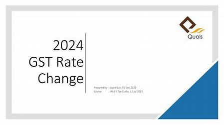

Understanding the New GST Rates Effective from April 2024
Published on December 30, 2024
The Goods and Services Tax (GST) has undergone significant changes effective from April 2024. These changes aim to streamline the tax structure, enhance compliance, and ensure a more transparent tax system. In this comprehensive guide, we will explore the new GST rates, their impact on various sectors, and what businesses and consumers need to know.
Overview of GST Rates
GST rates in India are categorized into multiple slabs: 5%, 12%, 18%, and 28%. These rates are determined based on the nature of goods and services and their necessity or luxury status. Essential items are taxed at lower rates to ensure affordability, while luxury goods and services are subjected to higher rates to generate revenue and discourage excessive consumption.
Key Changes in GST Rates
- Essential Goods: The GST rate for essential goods such as food grains, healthcare products, and educational materials remains at 5% to ensure affordability.
- Standard Goods: Items like household appliances, clothing, and electronics are taxed at 12% and 18%, depending on their category.
- Luxury Goods: Luxury items, including high-end cars, jewelry, and premium services, are taxed at 28% to generate higher revenue.
Impact on Businesses
The revised GST rates will have varying impacts on different sectors. Businesses dealing with essential goods may not see significant changes, while those in the luxury segment might experience a higher tax burden. It is crucial for businesses to understand these changes and adjust their pricing strategies accordingly.
Impact on Consumers
Consumers will experience changes in the prices of goods and services based on the revised GST rates. Essential items will remain affordable, while luxury goods may become more expensive. It is important for consumers to be aware of these changes to make informed purchasing decisions.
Compliance and Filing
With the new GST rates, businesses must ensure compliance with updated filing requirements. The introduction of the Invoice Management System (IMS) and GSTR-1A form will aid in maintaining accurate records and reducing discrepancies.
Conclusion
The new GST rates effective from April 2024 mark a significant step towards a more efficient and transparent tax system in India. Businesses and consumers alike must stay informed about these changes to navigate the evolving tax landscape effectively.